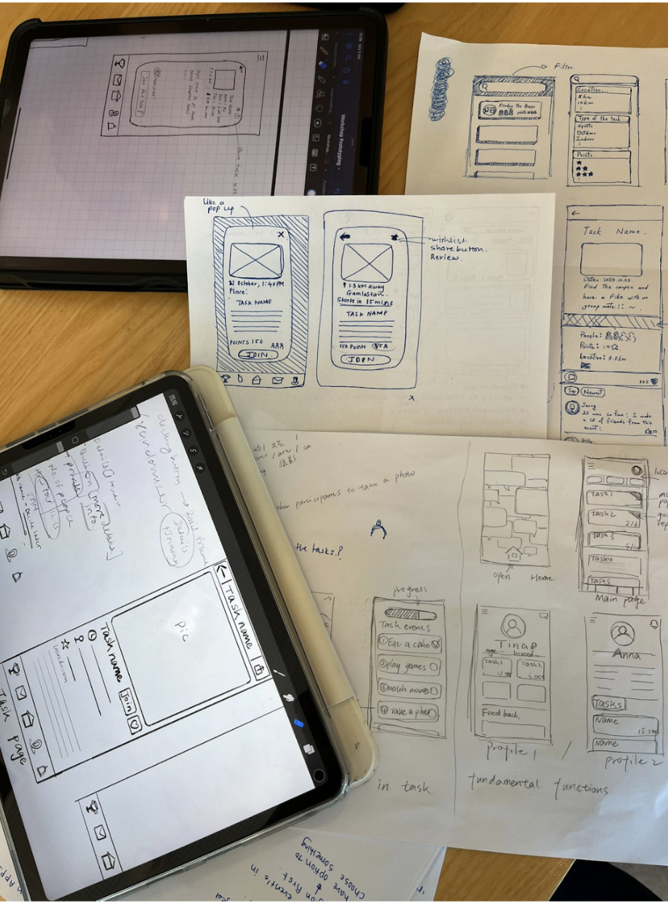

My Work

Reducing Loneliness and Building Connections for Young People Through Gamification
An high-fi prototype of an app that uses gamification to encourage social interaction, helping young people reduce loneliness and build meaningful connections. The creation of this prototype was completed during the course Media Technology and Interaction Design at KTH (2024).
More DetailsUsing Large Language Models to Generate Worked Examples of CS2-Level Programming Questions
A bachelor thesis conducted at KTH that explores how large language models (LLMs) can generate worked examples (WEs) for computer science education. While WEs are shown to be effective for teaching programming, their creation is time-consuming. We built on prior research to futher assess whether LLMs can help produce high-quality WEs (2024).
More Details